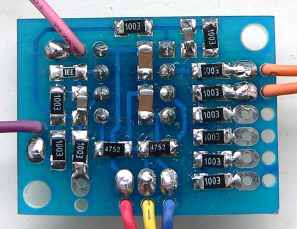

|
for music synthesizers. This project arose out of a need for a small mixer that preserved the D.C. component of signals, at audio frequencies and below, specifically for the hobbyist synthesizer builder, though it's applications do not stop there. Its compact size means it can easily be included along with other circuit boards in modules that do not have enough inputs of their own, such as some VCAs or VCFs. It can just as appropriately be used as a module in its own right. In this case there are six inputs.
This particular variant was designed to be a relatively simple SMT project for those who would like to have a go. A standard, fine-tipped soldering iron and 0.7mm resin cored solder were used to assemble it - the exact same tools as for through hole boards. The chip is a regular through-hole DIP-8 to keep things possible! 1206 or 805 SMT parts can be used for the remaining components.
The circuit design is quite conventional, using two op-amps in a unity gain inverting configuration. The first stage mixes the signals from the six inputs. The output signal from this op-amp is inverted. The second op-amp, simply re-inverts it. Provision is mad to mix an additional signal here. This signal will "subtract" from the signals on the main inputs. I.e., it will appear inverted at the output.
The 330R between the output of the op-amp and the output jack simply offers some protection to the op-amp in the event of a short circuit, which happens frequently when patch cords are being used. As it is in the feedback loop, the output will not be affected by varying loads, within reason. I.e. connecting several VCOs to the output will not cause any droop. The 47pF capacitors across each op-amp are to prevent oscillation. The two 100nf capacitors give some power supply isolation. Power rails can be almost anything from +/- 6V to +/- 15V. Asymmetrical rail voltages will work, but the mixer will behave as if it was running on supply of +/- of the lower of the rail voltages. E.g. supply rails of +12V/-6V would cause the mixer to behave if it was running on a +/- 6V supply.
Construction

A simple way to solder larger SMT passive components to a PCB. Place a small amount of solder on one of the two pads for the component. Place the component across the two pads. It will be propped up at one end on the solder. Using your fingernail, or a fine tool, hold the part in place while you reheat your solder. The component should sink into it and remain fixed. If it is not square, try reheating and adjusting it. Solder the other end. Re solder the first end. Note that very little solder is required. The holes without pads near the input and output pads are to allow a wire to be fed up from the bottom side, looped over and then soldered to the pad. The slack is then pulled back through the hole, creating an anchor that holds the wire by its insulation, reducing the chance of wire breakage. Notes:
Parts list This is a guide only. Parts needed will vary with individual constructor's needs. If anyone is interested in buying these boards, please check the PCBs for Sale page to see if I have any in stock.
Can't find the parts? See the parts FAQ to see if I've already answered the question. Also see the CGS Synth discussion group.
Article, art & design copyright 2009 by Ken Stone
| ||||||||||||||||||||||||||||